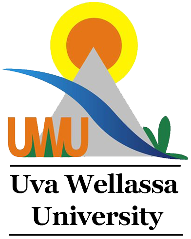

UVA WELLASSA UNIVERSITY OF SRI LANKA

HISTORY OF UVA WELLASSA UNIVERSITY
- 2005: Established as the 14th national university in Sri Lanka by a Government Gazette notification.
- 2006: Officially inaugurated with its main campus located in Badulla.
- 2006: Admitted its first batch of students with a focus on value-addition and entrepreneurial education.
- Present: Recognized as the first Entrepreneurial University in Sri Lanka offering outcome-based degree programs.
AVAILABLE FACULTIES
- Faculty of Animal Science and Export Agriculture – පශුසම්පත් හා අපනයන කෘෂිකර්ම පීඨය
- Faculty of Applied Sciences – අනුප්රයුක්ත විද්යා පීඨය
- Faculty of Management – කළමනාකරණ පීඨය
- Faculty of Technological Studies – තාක්ෂණික අධ්යයන පීඨය
- Faculty of Medicine – වෛද්ය පීඨය
- Faculty of Graduate Studies – පශ්චාත් උපාධි අධ්යයන පීඨය
GO TO OFFICIAL WEBSITE OF UVA WELLASSA UNIVERSITY
GO TO HOME PAGE